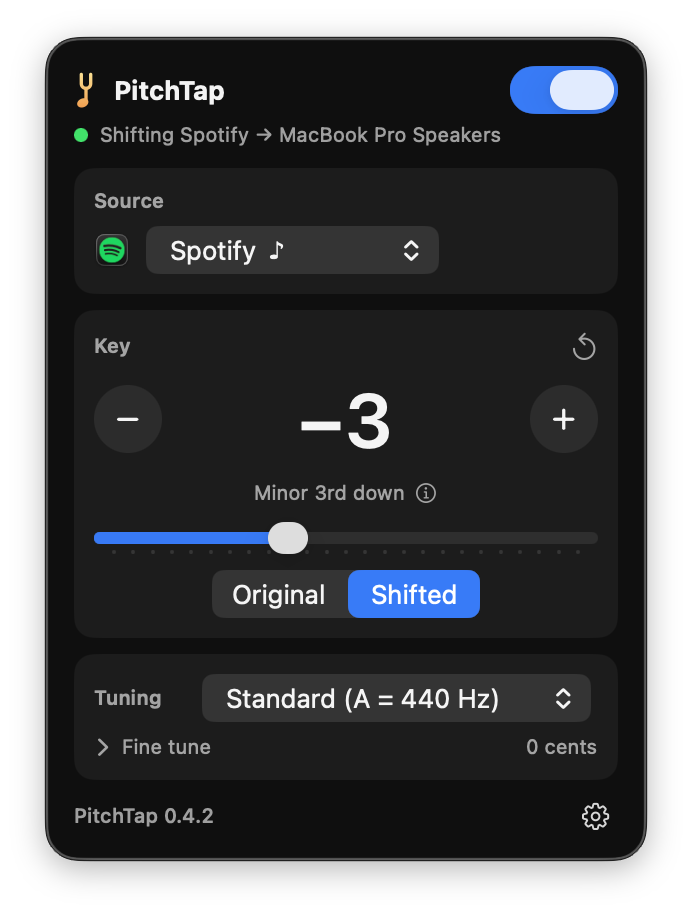
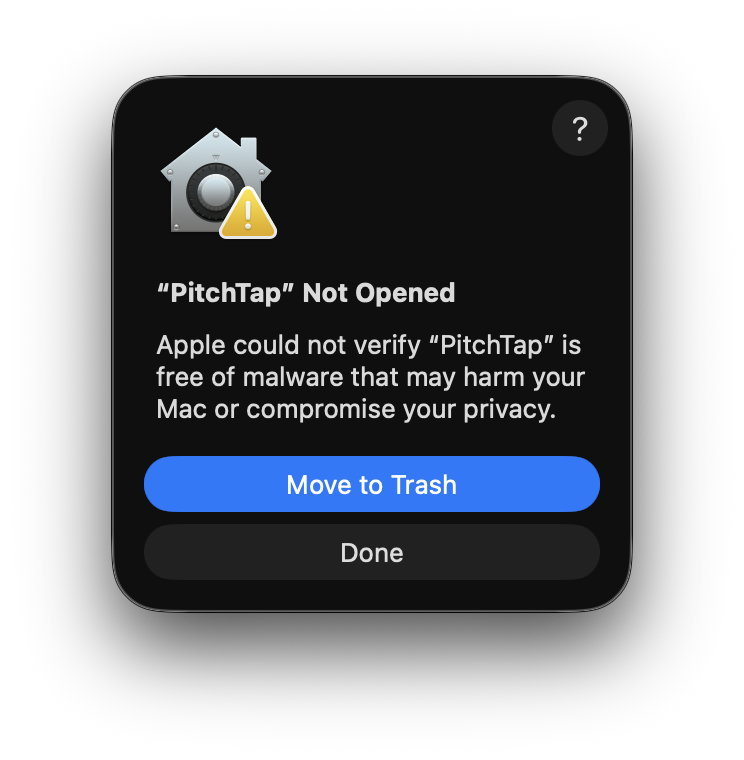

Change the pitch of any song on your Mac
PitchTap moves Spotify, Apple Music, YouTube or your whole Mac up or down in pitch, live. The tempo stays the same. Musicians can use it to change a song's key.
- Free and open source
- macOS 14.4+
- Apple silicon
- No account

How it works
It lives in your menu bar. Three clicks and you're singing in your key.
Pick an app
Spotify, Apple Music, a browser, a video call, or all sound on your Mac.
Press − or +
Each step is one semitone, up to an octave either way. Fine-tune in cents.
Keep playing
The song carries on at its normal speed. Tap Original to compare.
Who it's for
Singing and karaoke
Drop a song a couple of semitones so the chorus fits your voice.
Playing along
Transpose a recording to a key you know, or match your instrument's tuning. The capo fret is shown for you.
Just for fun
Hear a song an octave lower, or retune it to A = 432 Hz.
Opening it the first time
PitchTap isn't signed with a paid Apple certificate yet, so macOS asks once.
- Open PitchTap. When macOS says it can't verify it, click Done.
- Open System Settings › Privacy & Security and click Open Anyway.
- That's it. You won't see the warning again.

Private by design
Your audio is changed on your own Mac as it plays. Nothing is recorded, saved or sent anywhere. No account, no tracking.
Your audio
macOS asks for audio recording permission because that's how PitchTap hears the app you choose. The sound is shifted and played straight back, never stored.
Internet use
Only to check for updates, about once a day, and to download one if you install it. Both go through GitHub, which sees basic request details such as your IP address.
Your settings
Your source, pitch and other choices are saved on your Mac and nowhere else.
This website
No cookies or analytics of our own. It's hosted on GitHub Pages, and GitHub may log visits. The 👍 button talks to our own small counter on Cloudflare. It keeps the total and, for one day, a scrambled code (not your IP address) so a click isn't counted twice.
Questions
How do I change the key of a song on Spotify on a Mac?
Open PitchTap from the menu bar, choose Spotify as the source, and press − or +. Each step is one semitone. Spotify keeps playing at its normal speed, just in the new key. The same works for Apple Music, YouTube in any browser, or any other app.
Can I change the pitch without changing the tempo?
Yes, that's all PitchTap does. The pitch moves up to an octave either way (±12 semitones, plus ±50 cents for fine tuning), and the speed never changes.
Which apps does it work with?
Any app that plays sound: Spotify, Apple Music, Safari, Chrome, YouTube, video calls, or all system audio at once. You can shift one app and leave everything else alone.
Is it really free?
Yes. PitchTap is open source under the GPL-3.0 licence, with no ads, account or in-app purchases. It updates itself.
Like PitchTap?
It's made by one person in their spare time. A small sign helps.
Each person counts once a day, and we only show the total once it reaches 25.